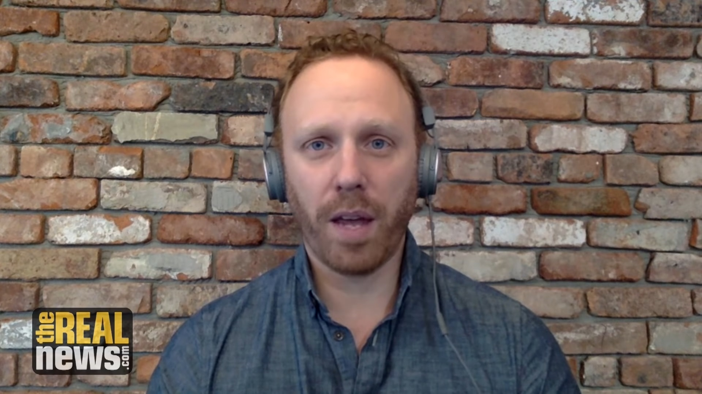
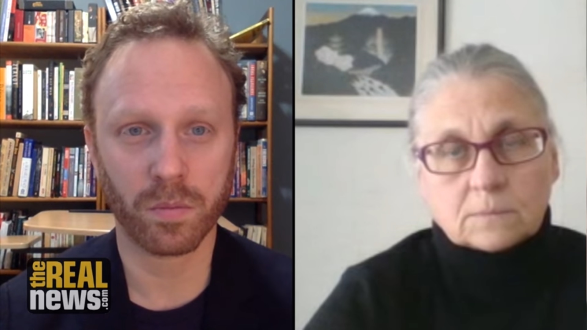
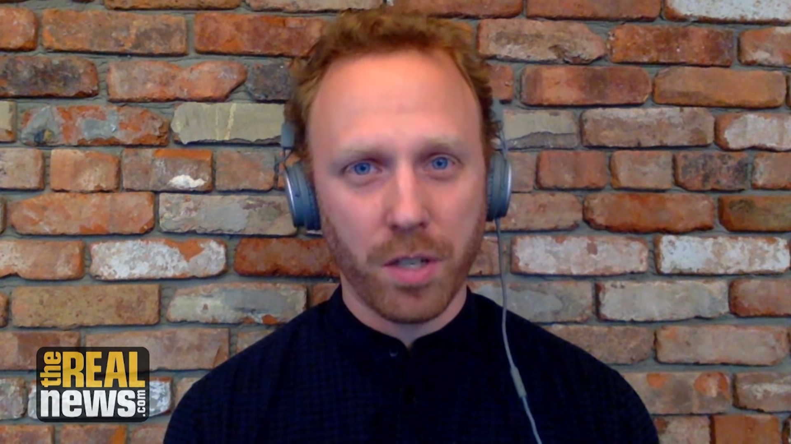
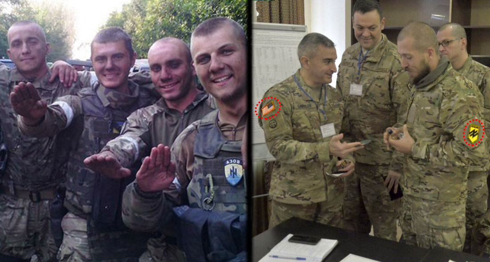

Israel Massacres Unarmed Gaza Protesters, Shooting 773 with Live Ammunition

The Israeli military brutally crushed a protest on the Gaza border led by tens of thousands of Palestinians, killing 16 and injuring 1,400.Journalist Max Blumenthal speaks of Israel’s suffocating blockade of the strip and the biased media reporting on the 'Great Return March.'
Ben Norton is a producer and reporter for The Real News.His work focuses primarily on U.S. foreign policy, the Middle East, media criticism, and movements for economic and social justice.Ben Norton was previously a staff writer at Salon and AlterNet.You can find him on Twitter at @BenjaminNorton.
Max Blumenthal is an award-winning journalist and bestselling author whose articles and video documentaries have appeared in The New York Times, The Los Angeles Times, The Daily Beast, The Nation, The Guardian, The Independent Film Channel, The Huffington Post, Salon.com, Al Jazeera English and many other publications.His most recent book is Goliath: Life and Loathing in Greater Israel.His other book, Republican Gomorrah: Inside The Movement That Shattered The Party, is a New York Times and Los Angeles Times bestseller.Max is co-host of the podcast Moderate Rebels.
BEN NORTON: Tens of thousands of Palestinians living under a suffocating Israeli blockade in Gaza organized a massive peaceful march on the border with Israel.And they were met with a sea of bullets.
Israel crushed the historic protest with extreme violence, mowing down the unarmed protesters.More than 1,400 Palestinians were injured.The Israeli military deployed more than 100 snipers, who shot 773 protesters with live ammunition.At least 16 Gazans were killed in the massacre.
Israels military later openly admitted that the massacre had been intentional and pre-planned.The IDF wrote on Twitter, everything was accurate and measured, and we know where every bullet landed.Soon after, it deleted these tweets.
The demonstration, which was dubbed the Great Return March, had been organized for months, in order to demand the right Palestinian refugees have under international law to return to their homes, which Israel ethnically cleansed in 1948.
The protesters also condemned Israels decade-long blockade of the Gaza Strip, which United Nations experts have explicitly said is illegal.
Because of this smothering siege, 1.8 million Palestinians are trapped inside Gaza with little water, food, and electricity.Even the United Kingdom’s Conservative former Prime Minister David Cameron has described the Israeli-besieged Gaza Strip as a 'prison camp' and 'open-air prison.
'The Real News spoke about the historic protest with journalist Max Blumenthal, who recently reported from on the ground in Gaza.
MAX BLUMENTHAL: This protest was also against the Israeli policy in the buffer zone where Israel controls territory inside Gaza and shoots people at will.But it was also about demonstrating the legitimate claim that Palestinians have to their land and property inside Israel according to UN Resolution 194, which was passed by the UN and gives Palestinians the right of return, which all refugees have.
This, this protest is the unarmed demonstration that we’ve heard a lot of liberal Zionist pundits call for over the years when they’ve demanded that there be a Palestinian Gandhi to rise up and lead his people in non-violent, unarmed demonstrations.In 2011, at the height of the Arab Spring or the so-called Arab Spring, Thomas Friedman wrote a column in The New York Times demanding that Palestinians embark on a giant peace march, a nonviolent protest march, in Jerusalem to protest the occupation.And he said that this march, it was peaceful, would immediately trigger a response in Israeli society with gestures towards peace in Israel.And that was an absurd column, because these marches and this kind of tactic of unarmed resistance has been witnessed in Palestinian villages for years and years and years, and the world just turns its head and ignores it, and then these clueless figures like Thomas Friedman say, well, why don’t they do that?When they’re doing it.
And so they’ve done it again today in a massive demonstration very similar to some of the demonstrations we saw in 2011 by Palestinian refugees in Syria and in Lebanon.They just simply marched to the border, and they were cut down by Israeli snipers.There is reports of Israel actually lobbing artillery with tanks into the buffer zone.And in the days leading up to this march, Israel that was testing drones that dropped tear gas from the air on protesters.
So this massive display of violence really shows Israel’s response to the Palestinian Gandhi, which is pure violence, no tolerance for it, and you know, complete silence from the mainstream American media.I’ve been sitting around watching CNN and MSNBC off and on today, and you know, I get glimpses of discussions about Stormy Daniels and Vladimir Putin’s global super bomb, but nothing about this.
BEN NORTON: Legal experts say Israel effectively occupies the Gaza Strip, tightly controlling everything and everyone that enters and leaves.
Blumenthal discussed the militarization of the Gaza border and the Israeli militarys regular killings of Palestinians who enter a buffer zone Israel has unilaterally imposed.
MAX BLUMENTHAL: The border of Gaza that used to be covered with barbed wire in some places back in the early ’50s is now a gigantic concrete wall.I was in Gaza a few weeks ago.I passed through that wall, it was the second time I entered, and I always look to my right as I’m walking through the buffer zone between Israel and where people are allowed to live in Gaza, and it’s about 300 meters.People in Gaza are not allowed to enter the buffer zone.If they do they’ll be shot by Israel.And they’ll not only be shot by Israeli snipers .There’s a remote control machine gun that’s permanently planted atop that concrete wall, and it’s operated from miles away by an all-female battalion of soldiers in the Negev desert who are basically pushing joystick buttons and shooting anyone who approaches the border wall.
BEN NORTON: While Israels massacre of the Gaza protesters did get some attention in the U.S. corporate media, outlets frequently used misleading and ambiguous language to create a false equivalence between the unarmed Palestinians protesters and the heavily armed Israeli military.
The New York Times described the one-sided Israeli slaughter of Palestinian protesters as clashes and confrontations.
Blumenthal addressed the bias and hypocrisy in Western media reporting.
MAX BLUMENTHAL: Well, Israel’s massacre of the Gaza protesters did get some attention in the US corporate media outlets frequently use misleading and ambiguous language to create a false equivalence between the unarmed Palestinian protesters and the heavily armed Israeli military.The New York Times described the one-sided Israeli slaughter of Palestinian protesters as clashes and confrontations.Blumenthal addressed the bias and hypocrisy in western media reporting.
I mean, just having been inside Gaza and being in Palestine for, you know, years off and on, I mean, people do use the language of clashes on the Palestinian side.It’s just part of the local language.But if you’re a Western reader the language of clashes does obfuscate the imbalance in power because you have Israeli snipers with advanced sniper rifles, barrages of tear gas, those rubber bullets.And as I mentioned, artillery is actually being used against these protesters.The protesters do throw rocks, and maybe they’ve some burning tires, and sometimes I’ve you know I’ve seen them throw the tear gas back.So you know, you can pretty much see that that these aren’t, like, equal clashes, two armies armed with light weapons and tanks.It’s youth with stones, but generally youth with signs and cameras and flags against, you know, walking into the teeth of one of the most advanced militaries in the world.
And so I do think that language obfuscates the situation.This is a massacre.It’s very similar to the Sharpeville massacre in South Africa.It recalls the Mavi Marmara massacre in 2010, and the massacres we witnessed on the Israeli borders with Lebanon and Syria of refugees attempting to march to their homes.And you know, worse than that, we heard that, we saw the New York Times describe the march this way: a peaceful march by Gazans to the border of Israel turned bloody.It just simply turned bloody.So we don’t know if people inside the march started, you know, all of a sudden they pull out their you know machine guns and suicide vests.I mean, we just don’t know, because it just turned bloody.Actually, Israel turned it bloody by shooting them, and that’s just too much for the New York Times to acknowledge.
BEN NORTON: The Israeli government tried to justify its bloody crackdown on unarmed protesters by claiming that they were rioting and covering up so-called terror attacks by Hamas, the Islamist political party that was elected to govern Gaza.But Blumenthal argued the protest shows the exact opposite to be true.
MAX BLUMENTHAL: Well, when I was in Gaza you actually saw preparations already underway for some kind of march like this.There were protest tents set up and every week on Friday there were demonstrations by local youth.Basically they would go to the border and throw rocks at Israeli soldiers, hold up Palestinian flags, chant.So this was already kind of underway.And you know, over the years these youth who have no affiliation with any faction, they’re not Hamas, they’re not being sent there by anyone.They’re kind of just, like, independent.They’ve been, they’ve been chased away at certain points by the al-Qassam Brigades, which is Hamas’ internal security and army and military arm.You know, Hamas is the ruler of the Gaza Strip and they control what happens on the borders.So basically what happens here is, what happened here is Hamas has decided to kind of authorize what people in Gaza and Gaza civil society has wanted to do for a long time, and they’ve given them the latitude to march to the border.And that’s, you know, that’s really upsetting to Israel.It’s really upsetting to the whole pro-Israel community.
What this shows is that Hamas is embracing nonviolent unarmed demonstrations rather than embracing the strategy they put on display in 2014, which is armed resistance.And you know, this is actually more terrifying in a way to Israel, that this technique which really came from the grassroots of Palestinian society, has always been at the heart of Palestinian resistance, has been authorized by a group that Israel and its allies have attempted to define as this gigantic terror threat.
BEN NORTON: Under international law, millions of Palestinian refugees have the right of return to historic Palestine.The Great Return March on the Gaza border was organized expressly to highlight this fact.
Blumenthal situated the demonstration in the historical context of the Nakba, the name for the mass expulsion of Palestinians in 1948.
MAX BLUMENTHAL: To understand why people are marching to what’s considered the border between Gaza and Israel you have to understand what Gaza is.Gaza is basically a human warehouse for refugees who are pushed out of their land and their property in 1947, in 1948, during the systematic campaign of ethnic cleansing by Zionist militias and what eventually became the Israeli military.Some 750000 people were turned into refugees in order to establish the state of Israel with a Jewish majority.A substantial number of those refugees went south towards Gaza, which was then under the control of Egypt, and Israel proceeded to pass a series of laws like the Prevention of Infiltration Act, which defined all of those people who had been pushed into Gaza as infiltrators and enabled their criminal prosecution and their capture, their violent capture, if they re-entered into what became Israel.David Ben-Gurion ordered his troops to shoot anyone who attempted to infiltrate again.
And the Gaza border, ever since the early ’50s, has really been the site of extreme brutality by Israel’s border guards against people trying to get back home from Gaza.Here we are 70 years later and people are still trying to walk home, to what they consider home.
BEN NORTON: Max Blumenthal also highlighted the irony that Israel carried out this massacre of protesters on the beginning of the religious holiday of Passover, which is meant to celebrate an enslaved people liberating itself from oppression.
MAX BLUMENTHAL: Tonight my family and friends and I are going to celebrate what we consider to be a festival of liberation, the liberation of the Hebrews from Egyptian bondage, and it’s something that’s really close to our tradition not only as Jews but as progressive people who believe in the liberation of all people.And it’s really ironic to see a state that claims the mantle of world Judaism, claims to speak for all Jews, not only obstructing the liberation of the Palestinian people but guaranteeing it with pure violence and rejecting all forms of dialogue.What the Palestinians are doing right now in Gaza, what these mostly young people are doing, is they’re calling on the world and they’re calling on, you know, the best, the better angels of the world.They’re reaching out and asking for solidarity, and they’re being cut down.And in the U.S. they’re basically being ignored by our media.So you know, if this call is rejected again and again, what other option do they have?
So I, I think, you know, for everyone who’s observing Passover tonight it’s important to reflect on what’s happening on the Gaza border, and how a state that is claiming to speak on behalf of all world Judaism is carrying out an act that flies in the face of anything that can be considered liberationist, humane, or anything remotely connected to the traditions that I’m going to observe at the Seder table tonight.
BEN NORTON: Reporting for the Real News, I’m Ben Norton.
Posted On: 2018-03-31T00:00:00
Posted By: Max Blumenthal



Content Date: 2018-03-31
Download Date: 2021-05-07
Document ID: L0C04ATWM